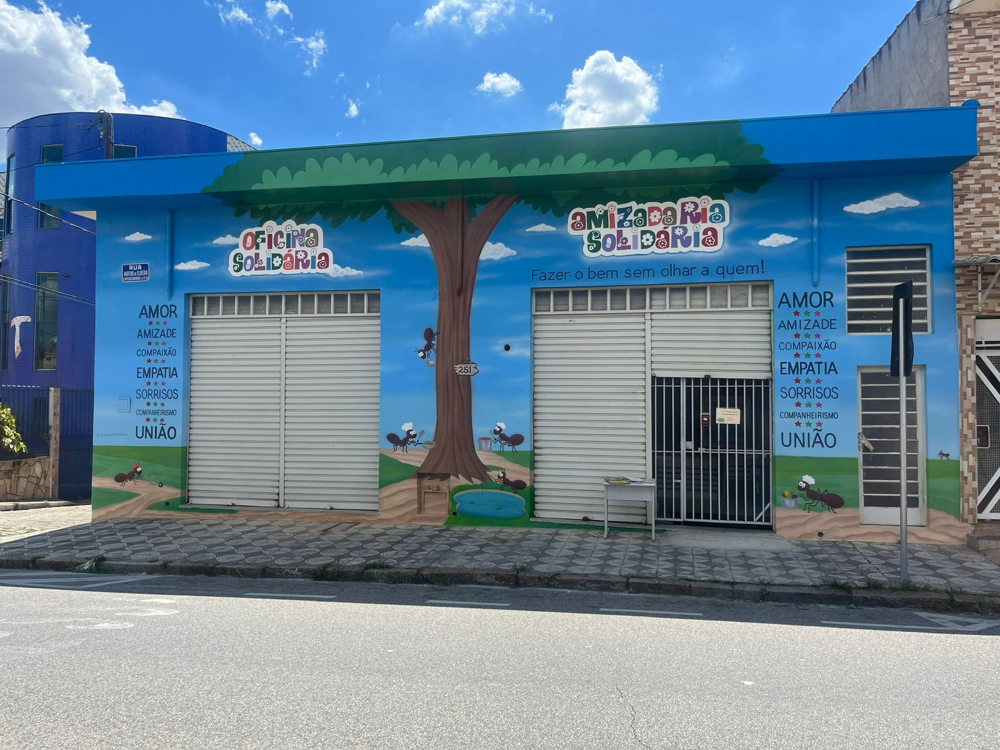

No 1°Semestre do Curso, fizemos uma lixeira inteligente, visando trazer beneficios para a sustentabilidade e inovação.

Trabalho Solidario:
Comecei a realizar trabalho voluntario recentemente, nesta associação, durante as quartas apos o periodo de estudo da faculdade,
eu junto com minha mãe vamos ate lá e ajudamos, escaniando cupons fiscais e armazenando em um sistema da associação.